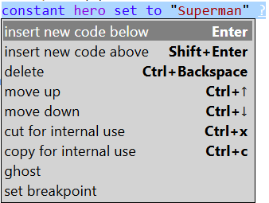

Watch the video: Navigate around the IDE
Always use Elan with the browser in 'full screen mode' – it makes more space available and is safer.
To change the text size, hold down the Ctrl key and use the mouse scroll wheel, or change the magnification via the browser's zoom menu.
If an area has a blue tinted background, it does not have browser 'focus' and will not respond to keyboard input. Use keyboard shortcuts or mouse or touch gestures to change the focus (which is indicated by a white background):
| To focus on... | Keyboard shortcut | Mouse gesture | Notes |
|---|---|---|---|
| code editor | Ctrl+e | Click on background within editor | See also Browse code |
| display | Ctrl+d | Click on the 'display' tab | To clear the Display pane, use the clear button shown within it |
| info | Ctrl+i | Click on the 'info' tab | To clear the Info pane, use the clear button shown within it |
| help | Ctrl+h | Click on the 'help' tab | |
| worksheet | Ctrl+k | Click on the 'worksheet' tab | (Ctrl+w is interpreted by the browser as 'leave web site') |
| a button | Ctrl+b | Click on the button | Ctrl+b puts focus on the first active button Use Tab or Shift+Tab to navigate to another active button |
Watch the video: Load, run, and save programs
| Intention | Menu action | Notes |
|---|---|---|
| use a demo program | demo then select desired program | |
| load a program file | file > load | if the editor contains unsaved code, you will be warned |
| append a file to the current code in the editor | file > append | external code is always appended to the end of the current code, but may then be moved |
| import a file into the current code in the editor | file > import | see Importing code |
| save a program file | file > auto save | any subsequent edits will be saved to the file (whenever the code parses) |
| cancel auto-saving | file > cancel auto save | this action appears only after setting up auto save |
| save a program manually | file > manual save | saves the code to file but does not automatically save subsequent changes |
| create a standalone Html page incorporating your program | file > save as standalone | the saved .html file contains the compiled program, and will run automatically when opened |
Existing Elan code may be imported into a new program via File > Import. This can facilitate re-use of code and the development of libraries. Importing differs from appending (see table above) in the following ways:
| To... | Keyboard shortcut | Mouse gesture | Notes |
|---|---|---|---|
| run a program | Ctrl+r | Click on 'run' button | disabled if there are any parse or compile issues. |
| stop a program that is running | Ctrl+s | Click on 'stop' button | Enabled only when the program is running |
If your program is doing intensive processing between interactions with you through the IDE, then clicking on the 'stop' button may not have an immediate effect. This is an unavoidable side effect within the browser, but you will be returned to editing after a short period. Avoid repeatedly clicking 'stop' as that might cause the browser tab to be closed.
See also Debugging programs
Watch the video: Browse code
The code shown in the editor has three types:
Comments and
| To... | Keyboard shortcut | Mouse gesture | Notes |
|---|---|---|---|
| select an arbitrary instruction | click on the initial keyword of the instruction or its number | ||
| select the next instruction | ↓ | limited to the current block of instructions | |
| select the previous instruction | ↑ | limited to the current block of instructions | |
| select the first instruction at the current level of indentation | Home | ||
| select the last instruction at the current level of indentation | End | ||
| select the outer instruction containing the current one | ← | ||
| select the first inner instruction contained by the current one | → | ||
| add the next instruction to the current selection | Shift+↓ | Shift, and click on the initial keyword of the instruction or its number | limited to the current block of instructions |
| add the previous instruction to the current selection | Shift+↑ | Shift, and click on the initial keyword of the instruction or its number | limited to the current block of instructions |
| toggle outlining on an individual instruction | select the instruction then Ctrl+o | double-click on the initial keyword or instruction number | |
| toggle outlining for whole program | Ctrl+O (same as Ctrl+Shift+o) | click the outline button |
Watch the video: Create New Instructions
When you have selected an instruction by clicking on its keyword (turning its background blue), some immediate actions are available from its context menu which is opened either by clicking the right mouse button on the keyword, or by keying Ctrl+m. The commonest context menu shows these options, any one of which may then be clicked on to do the action:
The context menu shows only those actions which are relevant to that instruction in its context.
The following is a list all possible menu items with key equivalents where applicable:
| do | undo | keyboard |
|---|---|---|
| ghost | unghost | |
| copy | Ctrl+c | |
| cut | Ctrl+x | |
| delete | Ctrl+Delete or Ctrl+Backspace | |
| insert new code below | Enter | |
| insert new code above | Shift+Enter | |
| move up | Ctrl+↑ | |
| move down | Ctrl+↓ | |
| set breakpoint | clear breakpoint | |
| clear all breakpoints | ||
| copy for external use | ||
| make private | make public | Ctrl+p (toggle) |
| To... | Keyboard shortcut | Mouse gesture | Notes |
|---|---|---|---|
| select any field within an instruction | click anywhere on the text, or placeholder, for that field. | Text cursor will be placed at the end of the field | |
| select the first field in a selected instruction | Tab | ||
| select the next field in the same instruction | Tab | will cycle through the fields and back to the whole instruction. | |
| select the previous field in the same instruction | Shift+Tab | will cycle through the fields and back to the whole instruction. | |
| select specific text within a field | Shift+← or → | click and drag across the desired characters | |
| select all text within a field | Ctrl+a | ||
| position text-cursor at the start of a selected field | Home | click anywhere within the selected field | |
| position text-cursor at the end of a selected field | End | click anywhere within the selected field | |
| go from the last field to the next instruction | Enter |
new code prompt where you want to insert an instruction then:
| To delete | Keyboard shortcut | Notes |
|---|---|---|
| one or more (adjacent) existing instructions | select the instructions then Ctrl+Delete, Ctrl+Backspace or Ctrl+x | deleting a compound instruction will delete all its contained instructions |
| a just-created instruction | Backspace | this works only if no fields have been entered or 'child' instructions added |
| a 'new code' prompt that is not needed | delete the same way as an instruction | |
| all 'new code' prompts | Click on the Trim button or Alt+t | removes all 'new code' prompts except in places where further instructions are required (for example so as not to leave an empty loop) |
| Action | Using the keyboard | Using the mouse |
|---|---|---|
| Undo previous changes | Ctrl+z | click on undo button |
| Redo previous undos | Ctrl+y | click on redo button |
Note that the pasted instructions must be compatible with their
new context, i.e. all of the instructions could have been created there in the first place.
If they are incompatible, no paste will take place and you will see a pop-up advisory message.
To restore the cut instructions to their original context, use
Instead of being able to 'comment out' code that you wish to retain but not execute, Elan provides a method for 'ghosting' sections of code with much the same effect, while leaving the ghosted code fully formatted.
Watch the video: Debugging programs
You can debug a running program with or without having set breakpoints.
| To... | Keyboard shortcut | Mouse gesture | Notes |
|---|---|---|---|
| debug a program, or resume debugging a paused program | Ctrl+g | Click on 'debug' button | disabled if there are any parse or compile issues. |
| pause a program that is running | Ctrl+u | Click on 'pause' button | enabled only when program is being debugged |
| step to the next instruction in a paused program | Ctrl+p | Click on 'step' button | enabled only then program is paused |
Whenever the program is paused, all named values (variables, parameters and
| To... | Keyboard shortcut | Mouse gesture |
|---|---|---|
| navigate to a specific line in the list when paused | Tab, Shift+Tab | Click on the line |
| expand/collapse a specific name within the list | Enter | Click on the + or - at the start of the line |
Before clicking on debug you can set breakpoints at one or more instructions where you want execution to pause. A red flash symbol appears at every instruction that has a breakpoint defined..
When run using debug the program will automatically pause at every breakpoint, and the in-scope named values will be listed in the Info pane.
| To... | Keyboard shortcut | Mouse gesture |
|---|---|---|
| set a breakpoint on a selected instruction | Ctrl+m on a selected instruction keyword then select set breakpoint | right-click for context menu, then select set breakpoint |
| clear existing breakpoints | Ctrl+m on a selected instruction keyword, then select clear breakpoint or clear all breakpoints | right-click for context menu, then select clear breakpoint or clear all breakpoints |
Where a keyboard shortcut is shown with the Ctrl control key, on an Apple Mac you should use the macOS ⌘ Command key instead.
Button File has menu option Preferences which offers a slightly modified colour scheme for users with CVD. Note that switching colour schemes automatically re-loads the web page – so you will receive a warning if you have unsaved code.